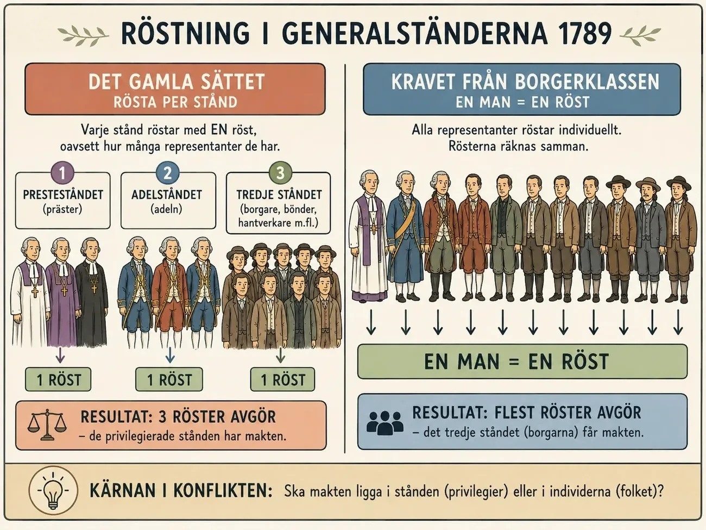
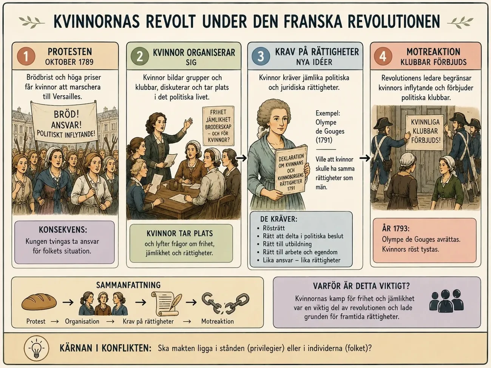

— revoltens fyra vågor: aristokrater, borgare, folk och kvinnor —
Franska revolutionen skedde inte på en gång. Den började som flera olika uppror av olika grupper. Man kan dela upp det i fyra steg: aristokraternas revolt, borgerskapets revolt, folkets och böndernas uppror, och kvinnornas revolt.
Frankrike hade mycket dålig ekonomi. Staten ville att även adeln — aristokraterna — skulle betala mer skatt. Men adeln protesterade och ville behålla sina privilegier . De krävde att frågan togs upp i generalständerna — Frankrikes riksdag där de tre stånden möttes. När kungen kallade in generalständerna 1789 öppnade han för en större konflikt. Nu började fler grupper kräva förändring.

Den franska revolutionens utbrott kan förstås som en process i fyra steg , där olika grupper i samhället successivt utmanade kungamakten. Det som börjar som en konflikt inom eliten utvecklas steg för steg till en bred samhällsomvälvning där allt fler grupper kräver inflytande, rättigheter och förändring.
Det första steget brukar kallas aristokraternas revolt . Med aristokrati menas samhällets högsta adel: de mäktiga familjer som hade stora jordegendomar och höga ämbeten.
Under slutet av 1700-talet befann sig Frankrike i en djup ekonomisk kris. Staten hade stora skulder, bland annat efter krig, och regeringen försökte lösa detta genom att kräva att även adeln — som tidigare haft skatteprivilegier — skulle börja betala skatt.
Detta mötte starkt motstånd från aristokratin. Adeln ville inte förlora sina privilegier och krävde i stället att frågan skulle avgöras av riksdagen, det vill säga Generalständerna . Adeln var alltså inte demokratisk — de krävde Generalständerna för att skydda sina egna privilegier mot kungens reformförsök.
Men deras motstånd fick stora konsekvenser. Kungen, Ludvig XVI , tvingades sammankalla Generalständerna år 1789 — för första gången sedan 1614.
Inför detta hölls omkring 40 000 lokala möten runt om i Frankrike. Där valdes representanter och människor fick skriva ned klagomål och reformförslag i så kallade klagoböcker (på franska cahiers de doléances ).
Här ser man ett viktigt skifte: även om initiativet kom från adeln öppnade processen upp för bredare deltagande och förväntningar på förändring i hela samhället. När människor väl hade kallats in för att diskutera rikets problem blev det svårt att återgå till det gamla systemet.
Aristokraterna ville skydda det gamla samhället. Men genom att tvinga fram Generalständerna öppnade de dörren till en mycket större politisk konflikt — som de själva inte längre kunde kontrollera.
Det finns en djup ironi i den franska revolutionen som är lätt att missa: den startades inte av de fattiga och förtryckta, utan av de allra mäktigaste. Revolutionens första gnista tändes av adeln själv — och den gnistan kom att bränna ner just den ordning adeln försökte försvara. Att förstå den ironin är att förstå hur revolutioner ofta börjar.
Bakgrunden var statens kris. Frankrike var i praktiken bankrutt, tyngt av krigsskulder — inte minst från stödet till den amerikanska revolutionen. Kungens ministrar insåg att den enda hållbara lösningen var att göra det otänkbara: att börja beskatta även de privilegierade, alltså adeln och kyrkan. Det var här adeln reste sig. Den vägrade blankt att ge upp sin skattefrihet, och den hade makt att sätta hårt mot hårt. Adelns "revolt" var alltså i grunden konservativ — ett försvar för gamla privilegier, inte ett krav på förändring.
Men för att stoppa kungen använde adeln ett argument som skulle slå tillbaka mot den med förödande kraft. Den hävdade att kungen inte ensam kunde besluta om nya skatter — det krävde att generalständerna, den gamla ståndsförsamlingen, kallades samman. Adeln tänkte sig att den själv skulle dominera en sådan församling och där blockera reformerna. Kungen, som saknade andra sätt att få in pengar, tvingades till slut ge efter och kalla samman generalständerna 1789 för första gången på över 170 år.
Och där tog det oväntade sin början. Genom att kräva generalständerna hade adeln öppnat en dörr den inte kunde stänga. En församling som skulle samlas innebar att hela landet fick börja diskutera skatter, rättigheter och makt öppet — och det tredje ståndet, som utgjorde nittiosju procent av befolkningen, tänkte inte nöja sig med att spela statist i adelns spel. Frågan om hur generalständerna skulle rösta blev genast en fråga om vem som egentligen skulle styra Frankrike.
Aristokraternas revolt visar därför något viktigt om hur omvälvningar fungerar: eliter som blockerar all förändring för att skydda sig själva kan råka utlösa exakt den revolution de fruktar. Adeln ville frysa tiden och bevara det gamla. I stället gav den revolutionen dess första knuff — och tappade snabbt kontrollen över det den satt i rörelse.
Borgerskapet — jurister, köpmän, läkare och andra utbildade — var en del av tredje ståndet. När generalständerna samlades ville de ändra röstningssystemet. Det gamla systemet gav varje stånd en röst, vilket betydde att adeln och prästerna tillsammans kunde rösta ner tredje ståndet. Borgerskapet krävde att varje representant skulle ha en röst.
När deras krav avvisades utropade de sig till nationalFörsamlingen den 17 juni 1789 och menade att de representerade hela folket. Sedan svor de bollhuseden — de lovade att inte skiljas åt förrän Frankrike fått en ny konstitution . Nu började makten flytta från kungen mot folket.
Det andra steget är borgerskapets revolt , där konflikten fördjupas och får en tydlig politisk dimension. När Generalständerna samlades uppstod en avgörande fråga: hur skulle röstningen gå till?
Traditionellt röstade varje stånd — adel, präster och tredje ståndet — med en röst var, vilket gav de privilegierade grupperna övertag. Borgerskapet inom det tredje ståndet krävde i stället att varje representant skulle ha en röst, vilket skulle ge dem majoritet eftersom de var fler.
När deras krav avvisades tog de ett avgörande steg. Den 17 juni 1789 utropade de sig till nationalförsamlingen och hävdade att de representerade hela folket. Därmed utmanade de direkt kungens makt och hävdade rätten att stifta lagar.
Konflikten skärptes ytterligare i samband med eden i bollhuset den 20 juni 1789. När nationalförsamlingens medlemmar stängdes ute från sin möteslokal samlades de i en inomhushall för racketsport och svor att inte skiljas förrän Frankrike fått en ny konstitution.
Detta var avgörande eftersom det markerade ett nytt synsätt på makt : den ansågs inte längre komma från kungen, utan från folket. Händelsen bygger tydligt på upplysningens idéer, särskilt från Jean-Jacques Rousseau , som menade att makten ytterst tillhör folket.
När även delar av prästerskapet och en mindre grupp adelsmän — däribland Gilbert du Motier de Lafayette — anslöt sig till nationalförsamlingen, tvingades kungen till slut acceptera situationen. Den 27 juni beordrade han att alla stånd skulle sammanträda gemensamt.
Därmed hade grunden lagts för en politisk revolution: övergången från absolutism till ett konstitutionellt tänkande.
Om adeln tände gnistan var det borgerskapet som fångade lågan och gjorde den till en riktig revolution. Det andra steget handlar om hur en grupp som saknade titlar men hade pengar, bildning och en tydlig idé om rättvisa tog kommandot över rörelsen — och i praktiken skrev om vad hela konflikten handlade om.
Den avgörande striden stod först om något som låter tekniskt men var allt annat än det: hur generalständerna skulle rösta. Traditionellt röstade man stånd för stånd, ett stånd en röst. Då kunde adeln och prästerskapet — de två privilegierade stånden — alltid rösta ner det tredje ståndet med två mot ett, hur många människor det senare än representerade. Det tredje ståndet krävde i stället att man skulle rösta per huvud, så att varje ledamot hade en röst. Skillnaden avgjorde allt: den ena metoden bevarade de privilegierades makt, den andra gav majoriteten av folket ett verkligt inflytande. Bakom en formfråga låg alltså själva maktfrågan.
När kungen tvekade tog det tredje ståndet saken i egna händer. Dess ledamöter förklarade sig utgöra nationalförsamlingen — de företrädde inte längre bara ett stånd, utan hela nationen. Snart svor de den berömda eden i bollhuset att inte skiljas åt förrän Frankrike fått en författning. Det var ett revolutionärt steg: en grupp utan formell rätt att göra så gjorde anspråk på att tala för folket och begränsa kungens makt.
Det viktiga att se är vad borgerskapet ville, för det skiljde sig från både adelns och de fattigas mål. Borgerskapet stred inte främst mot fattigdom eller för bröd. Det stred för att den ekonomiska makt de redan hade skulle motsvaras av politisk makt — för en författning, för lika rättigheter inför lagen, för att avskaffa privilegier som gjorde börd viktigare än förmåga. Det var upplysningens idéer omsatta i politik, drivna av just den klass som läst upplysningsfilosoferna.
Men borgerskapet hade ett problem: det var för litet och för respektabelt för att tvinga fram förändring på egen hand. För att pressa kungen och adeln behövde det något det inte självt kunde leverera — folkets råa kraft på gatorna. Och det är här nästa steg tar vid, med en obekväm sanning inbyggd: borgerskapet skulle komma att behöva massornas våld för att vinna, samtidigt som det fruktade vad de massorna kunde göra när de väl var i rörelse.
Kungen samlade soldater kring Paris och Versailles. Många människor var rädda att han skulle stoppa revolutionen med våld. Den 14 juli 1789 stormade folkmängder Bastiljen — ett fängelse och symbol för kungens makt. De ville också ha tag på vapen.
På landsbygden spreds oro. Det kallas den stora skräcken . Bönder var rädda att adeln skulle slå tillbaka. De attackerade herrgårdar och brände dokument som visade deras gamla skyldigheter mot adeln. Bönderna ville bli fria från det gamla feodala systemet med avgifter och dagsverken.
Det tredje steget är böndernas och folkets uppror , där revolutionen blir våldsam och sprider sig utanför de politiska församlingarna.
Kungen kände sig hotad av utvecklingen och samlade trupper i och omkring Paris och Versailles. Detta skapade oro bland befolkningen, som fruktade att revolutionen skulle slås ned med våld.
Stormningen blev brutal. Befälhavaren dödades och hans huvud sattes på en pik och visades upp. Händelsen fick stor symbolisk betydelse och ses ofta som revolutionens verkliga startpunkt . Den 14 juli är fortfarande Frankrikes nationaldag.
Under sommaren spreds oron till landsbygden i det som kallas den stora skräcken (på franska la Grande Peur ). Rykten spreds om att adeln planerade att slå tillbaka mot bönderna.
Som en följd reste sig bönderna i uppror. De attackerade herrgårdar och brände dokument som reglerade feodala rättigheter och skyldigheter . Dokumenten var viktiga eftersom de fungerade som juridiska bevis för adelns rätt att kräva avgifter. Genom att förstöra dem försökte bönderna inte bara protestera symboliskt, utan konkret befria sig från det gamla feodala systemet .
Natten mellan 4 och 5 augusti beslutade nationalförsamlingen att avskaffa många feodala privilegier . Adliga rättigheter, kyrkliga privilegier och lokala särregler avskaffades. Ståndssamhällets grund började brytas sönder.
Kort därefter, den 26 augusti 1789 , antogs Deklarationen om människans och medborgarens rättigheter — ett av revolutionens viktigaste dokument. Den slog fast principer om frihet, jämlikhet inför lagen och att makten ligger hos nationen.
Detta visar att revolutionen nu inte bara handlade om politiskt inflytande, utan också om sociala och ekonomiska förändringar. För vanligt folk handlade revolutionen om bröd, trygghet, skatter, avgifter och makten över det egna livet .
De två första stegen — adelns och borgerskapets revolter — utspelade sig i församlingssalar och handlade om röstregler och författningar. Det tredje steget flyttade revolutionen ut på gatorna och åkrarna, och gjorde den för första gången våldsam, folklig och omöjlig att kontrollera. Det är också här revolutionen räddades — av just de krafter som senare skulle bli dess mardröm.
Situationen sommaren 1789 var explosiv. Missväxt hade drivit brödpriserna i höjden, och för en vanlig familj gick en orimlig andel av inkomsten till bara bröd. När rykten spreds att kungen samlade trupper för att slå ner nationalförsamlingen kokade Paris över. Den 14 juli stormade folkmassan Bastiljen, en fästning och symbol för kungens godtyckliga makt. Händelsen hade begränsad militär betydelse, men enorm symbolisk: den visade att folket var berett att ta till våld, och att kungen inte längre säkert kunde lita på sin egen huvudstad.
Samtidigt svepte en våg av panik och uppror över landsbygden, la Grande Peur — den stora rädslan. Bönder, plågade av avgifter och rykten om att adeln skulle hämnas, angrep herrgårdar och brände de dokument som fastställde deras feodala skyldigheter. Det var inte en organiserad revolution utan en explosion av uppdämt raseri mot århundraden av orättvisa.
Här ligger det avgörande sambandet, och det är det fördjupningen vill lyfta fram. Folkets och böndernas våld var inte en störning i den "riktiga", politiska revolutionen — det var det som drev den framåt. När landsbygden brann och Paris beväpnade sig kände sig nationalförsamlingen tvingad att agera. Natten mot den 4 augusti avskaffade den, i en känslostorm, feodalismens privilegier och avgifter. Ett årtusende av börd och frälse föll på några timmar — inte för att borgerskapet plötsligt blivit radikalt, utan för att böndernas uppror gjorde det omöjligt att låta bli. Folkets kraft hade tvingat fram det församlingen aldrig hade vågat på egen hand.
Men i samma seger fanns fröet till framtida konflikt. Borgerskapet behövde folkets våld för att besegra den gamla ordningen — men det litade inte på det. De egendomsägande revolutionärerna ville ha en ordnad författning, inte en ständig folklig resning som lika gärna kunde vända sig mot dem själva. Alliansen mellan borgerskapet och massorna var därför äkta men spänd: den vann revolutionen 1789, men bar redan inom sig den motsättning som några år senare skulle explodera i skräckväldet.
Kvinnor hade inga politiska rättigheter — de fick inte rösta. Samtidigt hade många ansvar för familjens mat. När brödet blev dyrt och det rådde brödbrist blev situationen kritisk. I oktober 1789 marscherade tusentals kvinnor från Paris till Versailles . De krävde bröd och att kungen skulle ta ansvar.
Protesten lyckades — kungen tvingades flytta från Versailles till Paris, närmare folket. En viktig person var Olympe de Gouges , som krävde att kvinnor skulle ha samma rättigheter som män. Men revolutionen gav inte kvinnor fulla rättigheter. Olympe de Gouges avrättades senare. Det visar att revolutionens idéer om frihet och jämlikhet inte gällde alla från början.

Det fjärde steget är kvinnornas revolt , som ytterligare breddar revolutionen. Kvinnor saknade politiska rättigheter och var juridiskt underordnade män, men hade ett stort ansvar för hushållets försörjning. När brödpriserna steg kraftigt drabbades de därför direkt.
Protesten fick stora konsekvenser: kungen tvingades flytta från Versailles till Paris och hamnade därmed under folkets kontroll. Versailles hade varit absolutismens centrum — när kungafamiljen tvingades flytta till huvudstaden var det en symboliskt avgörande förändring .
Kvinnornas engagemang stannade inte vid protester. De organiserade sig i klubbar och deltog i politiska diskussioner. En central aktör var Olympe de Gouges , som år 1791 skrev Deklarationen om kvinnans och medborgarinnans rättigheter . Hon krävde att kvinnor skulle ha samma politiska och juridiska rättigheter som män, inklusive rösträtt och rätt att delta i politiska beslut.
Hennes idéer var radikala och byggde på upplysningens tankar om mänskliga rättigheter. Liknande tankar formulerades i Storbritannien av Mary Wollstonecraft , som menade att kvinnor inte var mindre förnuftiga av naturen — utan hade gjorts beroende genom bristande utbildning. Dessa idéer kan ses som en tidig form av feminism.
Detta visar att revolutionens jämlikhetsideal hade tydliga begränsningar . Revolutionen kunde avskaffa adelns privilegier och tala om medborgarens rättigheter, men den var inte beredd att fullt ut erkänna kvinnor som politiska medborgare.
Kvinnornas revolt visar därför både revolutionens radikalitet och dess begränsning. Den visar hur kvinnor kunde påverka historien genom handling — samtidigt som de stängdes ute från den formella makten.
De fyra stegen visar hur revolutionen utvecklas från en elitkonflikt till en bred samhällsrevolution :
Aristokratin försökte försvara sina privilegier. Borgerskapet tog den politiska makten. Folket och bönderna drev fram sociala förändringar. Kvinnorna utmanade gränserna för vem som skulle räknas som medborgare.
Tillsammans skapade dessa steg en process som inte bara förändrade Frankrike, utan också lade grunden för moderna idéer om demokrati och rättigheter — samtidigt som den tydliggjorde att dessa idéer inte från början omfattade alla.
Revolutionen är nu en gemensam folklig kraft — men den har också blivit våldsam. I Tema 4 ska vi se vad som hände när revolutionen vände sig mot sig själv : kungen avrättas, jakobinerna tar makten, och giljotinen blir symbol för skräckväldet.
Det fjärde steget avslöjar en av revolutionens djupaste motsägelser. Kvinnorna var med och drev revolutionen framåt i dess mest avgörande ögonblick — och belönades med att uttryckligen nekas de rättigheter revolutionen proklamerade för "alla". Att förstå den motsägelsen är att förstå både hur radikal revolutionen var och var dess gränser gick.
Kvinnornas mest berömda insats var marschen till Versailles i oktober 1789. Drivna av bröbrist och höga priser tågade tusentals kvinnor från Paris de tjugo kilometrarna ut till slottet i Versailles och krävde bröd av kungen. Men marschen blev något mycket större än en hungerdemonstration. Kvinnorna tvingade kungafamiljen att lämna Versailles och flytta till Paris, mitt bland folket. Det var ett politiskt jordskred: kungen var inte längre en avlägsen, upphöjd gestalt i sitt slott, utan i praktiken under folkets uppsikt i huvudstaden. En handling som började i tomma brödkorgar slutade med att flytta maktens centrum — och det var kvinnorna som genomförde den.
Kvinnor deltog också i revolutionens idékamp. Olympe de Gouges skrev 1791 sin Deklaration om kvinnans och medborgarinnans rättigheter, medvetet formad som ett svar på revolutionens berömda deklaration om "människans och medborgarens rättigheter". Hennes poäng var lika enkel som obekväm: om revolutionen menade allvar med att alla människor har lika rättigheter, hur kunde den då utesluta halva befolkningen? Hon tog revolutionens egna ord och vände dem mot dess egna gränser.
Och här är motsägelsen. Trots att kvinnor kämpade, marscherade och skrev, förvägrades de systematiskt politiska rättigheter. De fick inte rösta, inte inneha ämbeten, och räknades i praktiken inte som fullvärdiga medborgare. Revolutionen som utropade universella rättigheter drog i tysthet en gräns vid kön. Olympe de Gouges öde säger allt: hon avrättades senare under skräckväldet, delvis för sitt politiska engagemang.
Det här är samma mönster som du redan mött — hos Wollstonecraft i upplysningen och i frågan om slaveriet under den amerikanska revolutionen. Gång på gång visade sig de "universella" rättigheterna ha en osynlig gräns: de gällde egentligen fria, egendomsägande män. Revolutionen var alltså på samma gång djupt radikal — den vågade formulera idén om allas lika rättigheter — och djupt ofullständig, eftersom den inte var beredd att låta idén gälla alla. Kvinnornas revolt är därför inte en fotnot till 1789, utan den skarpaste påminnelsen om att frihetens löften och frihetens gränser föddes i samma andetag.
Laddar övningskort…
Laddar frågor ...